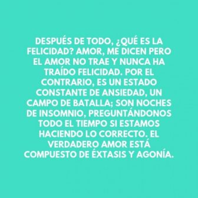

Regresar

Después de todo, ¿qué es la felicidad? Amor, me dicen Pero el amor no trae y nunca ha traído felicidad. Por el contrario, es un estado constante de ansiedad, un campo de batalla; Son noches de insomnio, preguntándonos todo el tiempo si estamos haciendo lo correcto. El verdadero amor está compuesto de éxtasis y agonía.
Los seres humanos pueden soportar una semana sin agua, dos semanas sin comida, muchos años sin hogar, pero no soledad. Es la peor de todas las torturas, el peor de todos los sufrimientos.
La alegría es a veces una bendición, pero a menudo es una conquista. Nuestro momento mágico nos ayuda a cambiar y nos envía en busca de nuestros sueños. Sí, vamos a sufrir, tendremos momentos difíciles y experimentaremos muchas decepciones, pero todo esto es transitorio y no deja una marca permanente. Y un día miraremos hacia atrás con orgullo y fe en el viaje que hemos emprendido.
Todos creen que la mentira más grande del mundo …” dice el misterioso anciano. ¿Cuál es la mentira más grande del mundo?”, Pregunta el niño.
El anciano responde: “Es esto: que en cierto punto de nuestras vidas, perdemos el control de lo que nos está sucediendo, y nuestras vidas se vuelven controladas por el destino. Esa es la mayor mentira del mundo .